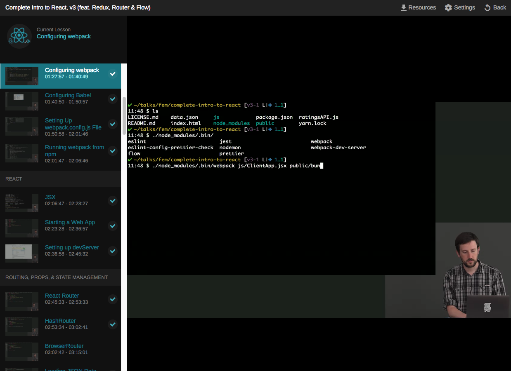

Review of FrontendMasters React.js/Redux Tutorial v3
w I'm trying to learn React.js along with Redux. These frameworks are really complicated to set up and get familiar with on the basics level, so I was hoping that taking an online course would get me up to speed with the contextual background knowledge needed to get a single page React app up and running.

Positive
So first I'll start with the good. This course gave me much of the general background I was hoping for. In addition to basic React, it covered some of the basic set up of a React single page application beyond the cop out of telling you to use create-react-app. By showing you how to integrate into Webpack, it shows you how to use React in a more practical sense as you would in a company environment. I got a much better bird's eye view than I would have from reading the official React guides alone.
It also incorporates a lot of useful tools like Prettier, eslint, and testing using Jest. I think I accomplished the big goal of getting to understand how Redux incorporates with React. For example, I when I tried approaching learning React/Redux independently from the online reference guides, I did not understand that Redux replaces the entire state machine that the React tutorials tell you to use. Seeing this in action side by side clicked with me.
Negative
Despite getting a good general overview of React through this course, I feel like part of its downfall was that it tried to incorporate too much. This course is over 14 hours long, and I'm in a crunch to learn this as fast as I can. I think he went into a lot of topics that were unnecessary like Flow. My employer uses Typescript so this is something that I think is better served in another tutorial. Of course, you can always skip over those sections, but you will get a little lost if you are coding along and following the examples in your own locally hosted project. Another minor annoyance is that the instructor would occasionally get stumped by a lint error and spend time debugging it. That sort of junk is boring to watch and throws off my learning flow. I paid for this stuff so I expect him to come prepared with a Powerpoint and more structured overview.
The biggest problem I have with this course is the same weakness I see with a lot of other coding instruction, including CodeSchool. There's too much "Type this into this file and... wow!" I really hate it when an instructor has too much magic going on behind the scenes that he doesn't explain. This is especially relevant in the areas related to configuration like Webpack setup.
Speaking of which, I also tried out the FrontendMasters Webpack tutorial and was disappointed. I just want to know the basic structure of Webpack explained in context - but the guy running the 5 hour course rambled off on too many tangents such as about Node modules he personally worked on but have no relevance to Webpack. All I wanted to know was X, Y, Z steps to set up and configure Webpack to get my SCSS compiled to CSS. Show me how to use the Webpack references by providing a good contextual overview and I can take it from here.
Conclusion
I believe the most intimidating thing about learning React is not the React concepts itself, but the whole associated array of tools to create a single page application. The React Guides got me so far, but don't tell you about the essential associated technologies to run the whole big picture like Webpack and Redux. FrontendMasters was an okay course, but was really inefficient for my learning style. I wish they just did away with the whole video tutorial and wrote out the entire course as a series of blog entries so that I can skim to the important parts.
If you want to really learn Redux, try this tutorial right here.